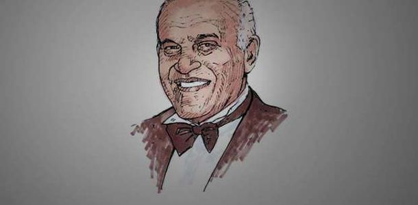
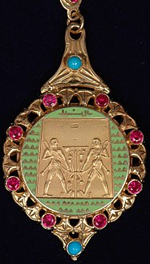

Achievements of Dr.Magdi Yacoub
Among them are "Sir" and "Guinness"... Titles and awards received by Magdi Yacoub
| Awards | The year of recieving award | photo | The organization is responsible for delivering the award |
|---|---|---|---|
| the title of "Sir" | 1991 | .jpg) |
the Queen of Britain |
| Pride of Britain award | 1999 |  | the British Minister |
| the British Order of Merit | 2014 |  |
Queen Elizabeth of Britain |
| Order of the Great Collar of the Nile | 2011 |  | President Mohamed Hosni Mubarak |
| the gold medal | 2015 | .jpg) |
Queen Sofia of Spain |
| the Great Medal of the American Heart Association | 2012 |  |
the American Heart Association |
| the "Ambassador of Humanity" | 2011 |  |
the International Organization for Justice and Peace in Norway |
| named him "Knight" | 1966 | Queen Elizabeth | |
| "Golden Hippocrates Moscow Award" | 2003 | .jpg) |
the World Health Organization |
| the International Society of Heart and Lung Transplantation | 2004 |  |
International Society |
| the Golden Medal of the European Society of Cardiology | 2006 | .jpg) |
European Society |
| the "Re-fish" medal | 1998 | |
Texas Heart Institute |
Facts about Magdi Yacoub
He has performed more than 20,000 heart surgeries in Britain. A British team has succeeded in developing a heart valve based on stem cells. Serves as an ambassador for organ transfers. The Petchey Academy west of London is named after him. Established a free-of-charge cardiology center in Aswan
Dr. Magdi Yacoub visits Egypt every period during which he performs many open-heart surgeries for free. Dr. Magdi Yacoub established a center for heart operations in the city of Aswan in Upper Egypt in 2009. A statue of him was established in Aswan and another in Belbeis in a square bearing his name in appreciation of his great role in the field of medicine